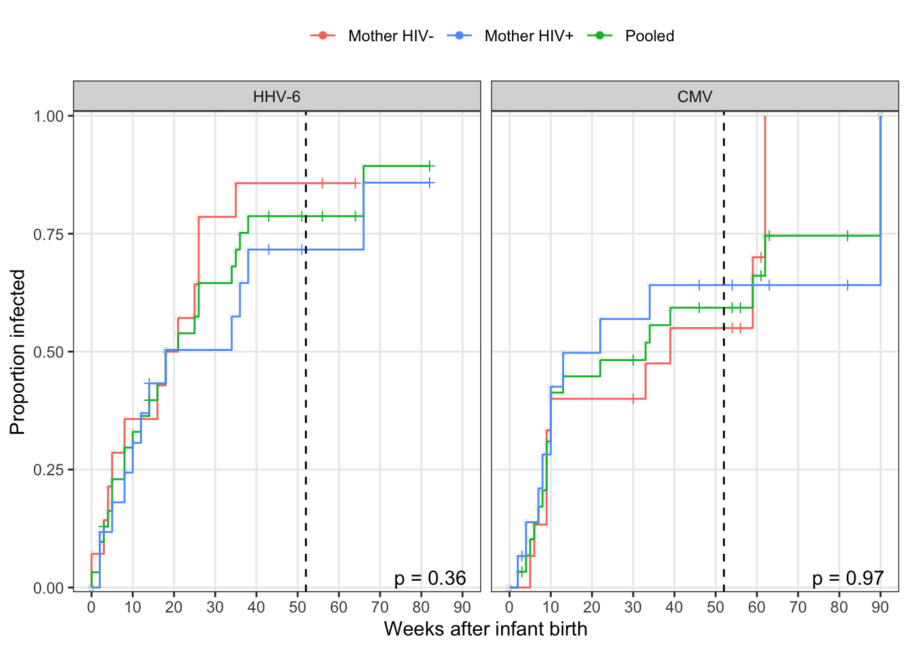
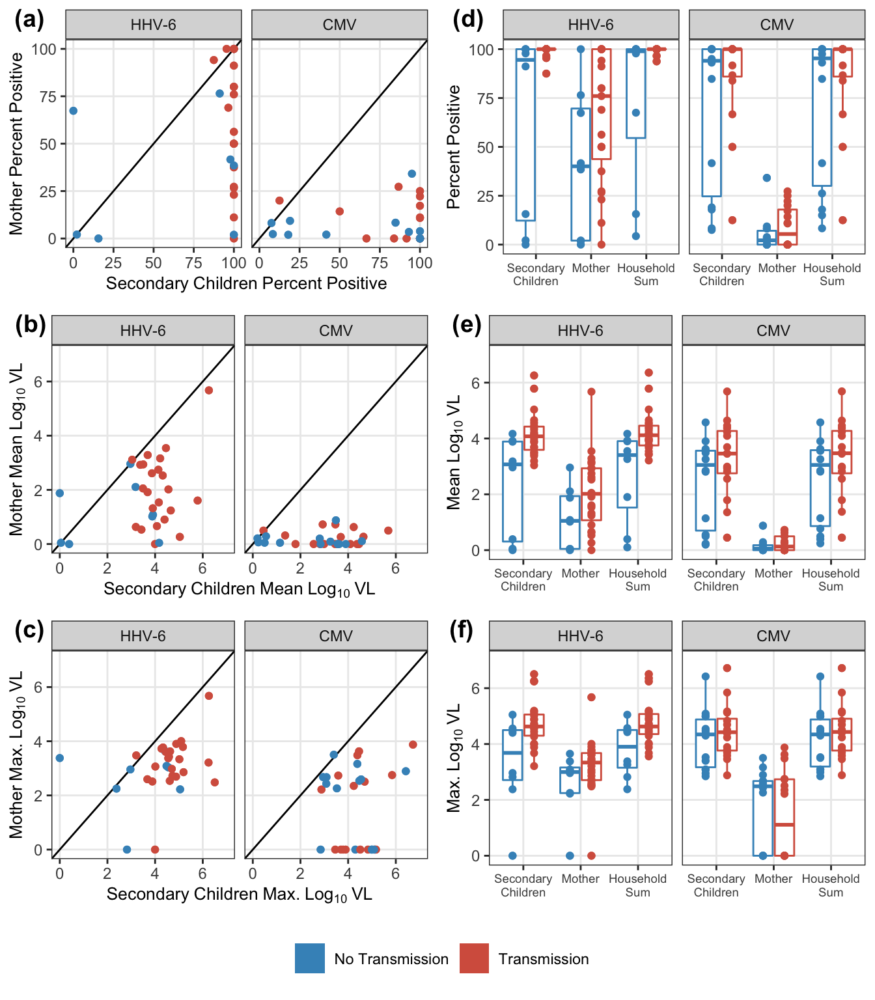
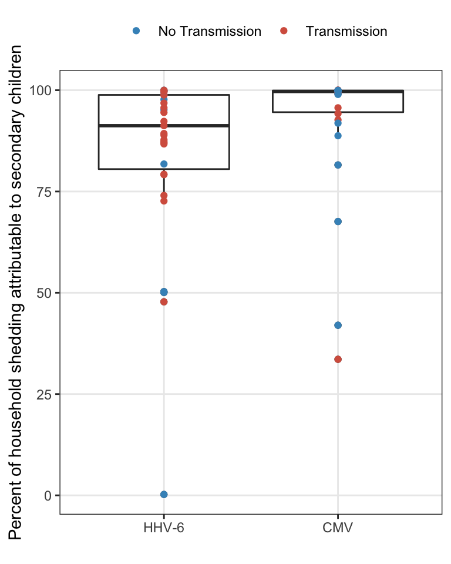

Last updated: 2019-05-07
Checks: 5 1
Knit directory: HHVtransmission/
This reproducible R Markdown analysis was created with workflowr (version 1.2.0). The Report tab describes the reproducibility checks that were applied when the results were created. The Past versions tab lists the development history.
The R Markdown file has unstaged changes. To know which version of the R Markdown file created these results, you’ll want to first commit it to the Git repo. If you’re still working on the analysis, you can ignore this warning. When you’re finished, you can run wflow_publish to commit the R Markdown file and build the HTML.
Great job! The global environment was empty. Objects defined in the global environment can affect the analysis in your R Markdown file in unknown ways. For reproduciblity it’s best to always run the code in an empty environment.
The command set.seed(20190318) was run prior to running the code in the R Markdown file. Setting a seed ensures that any results that rely on randomness, e.g. subsampling or permutations, are reproducible.
Great job! Recording the operating system, R version, and package versions is critical for reproducibility.
Nice! There were no cached chunks for this analysis, so you can be confident that you successfully produced the results during this run.
Great! You are using Git for version control. Tracking code development and connecting the code version to the results is critical for reproducibility. The version displayed above was the version of the Git repository at the time these results were generated.
Note that you need to be careful to ensure that all relevant files for the analysis have been committed to Git prior to generating the results (you can use wflow_publish or wflow_git_commit). workflowr only checks the R Markdown file, but you know if there are other scripts or data files that it depends on. Below is the status of the Git repository when the results were generated:
Ignored files:
Ignored: .DS_Store
Ignored: .Rhistory
Ignored: .Rproj.user/
Ignored: analysis/.DS_Store
Ignored: analysis/.Rhistory
Ignored: data/.DS_Store
Ignored: docs/.DS_Store
Ignored: docs/figure/.DS_Store
Ignored: docs/figure/general-statistics.Rmd/.DS_Store
Untracked files:
Untracked: analysis/transmission-risk.Rmd
Unstaged changes:
Modified: analysis/general-statistics.Rmd
Modified: analysis/index.Rmd
Note that any generated files, e.g. HTML, png, CSS, etc., are not included in this status report because it is ok for generated content to have uncommitted changes.
These are the previous versions of the R Markdown and HTML files. If you’ve configured a remote Git repository (see ?wflow_git_remote), click on the hyperlinks in the table below to view them.
| File | Version | Author | Date | Message |
|---|---|---|---|---|
| Rmd | 2eef601 | Bryan Mayer | 2019-04-19 | pre- removal of interpolation in exposure analysis |
| html | 2eef601 | Bryan Mayer | 2019-04-19 | pre- removal of interpolation in exposure analysis |
| Rmd | 9987890 | Bryan Mayer | 2019-04-12 | updated through exposure assessment |
| html | 9987890 | Bryan Mayer | 2019-04-12 | updated through exposure assessment |
| html | 37f0c94 | Bryan Mayer | 2019-04-08 | Build site. |
| html | 2f57367 | Bryan Mayer | 2019-04-07 | Build site. |
| html | 5af6494 | Bryan Mayer | 2019-03-20 | Build site. |
| Rmd | 05626ad | Bryan Mayer | 2019-03-20 | wflow_publish(c(“analysis/about.Rmd”, “analysis/index.Rmd”, |
Here, we calculate some of the initial (pre-model) results from the infant cohort and exposure characteristcs. - Demographics - Initial survial curves - Exposure assessment
exposure_data %>%
select(FamilyID, enrollment_age) %>%
distinct() %>%
summarize(
N = n(),
enroll_median_age_days = median(enrollment_age),
IQR = paste(quantile(enrollment_age, c(0.25, 0.75)), collapse = ", "),
range_days = paste(range(enrollment_age), collapse = ", ")
) %>%
kable() %>% kable_styling(full_width = F)| N | enroll_median_age_days | IQR | range_days |
|---|---|---|---|
| 32 | 2 | 1, 3 | 0, 9 |
exposure_data %>% select(FamilyID, momhiv) %>%
distinct() %>%
group_by(momhiv) %>%
summarize(N = n()) %>%
kable() %>% kable_styling(full_width = F)| momhiv | N |
|---|---|
| neg | 15 |
| pos | 17 |
exposure_data %>%
group_by(virus, FamilyID) %>%
summarize(obs_infected = max(infectious_1wk),
is_infected = max(infected)) %>% group_by(virus) %>%
summarize(
total_infants = n_distinct(FamilyID),
total_infected = sum(is_infected),
total_outcome = sum(obs_infected)
) %>%
kable() %>%
kable_styling(full_width = F)| virus | total_infants | total_infected | total_outcome |
|---|---|---|---|
| CMV | 30 | 20 | 16 |
| HHV-6 | 31 | 24 | 23 |
surv_data = exposure_data %>%
group_by(FamilyID, virus, momhiv, final_infant_wk) %>%
summarize(
infected = max(infected)
)
surv_fit = surv_data %>%
group_by(virus) %>%
nest() %>%
mutate(
surv_mod = map(data, ~survfit(Surv(final_infant_wk, infected) ~ 1, data = .)),
surv_mod_hiv = map(data, ~survfit(Surv(final_infant_wk, infected) ~ momhiv, data = .)),
logrank = map_dbl(data, ~coin::pvalue(coin::logrank_test(Surv(final_infant_wk, infected) ~ factor(momhiv),
data = ., distribution = "exact")))
) %>%
select(-data)
surv_fit %>%
select(virus, logrank) %>%
rename(`Mother HIV Log-rank` = logrank) %>%
kable() %>% kable_styling(full_width = F)| virus | Mother HIV Log-rank |
|---|---|
| CMV | 0.9708864 |
| HHV-6 | 0.3649318 |
surv_res = pmap_df(surv_fit, function(virus, surv_mod, surv_mod_hiv, logrank){
broom::tidy(surv_mod) %>%
mutate(strata = "Pooled") %>%
bind_rows(broom::tidy(surv_mod_hiv)) %>%
mutate(
virus = virus,
momhiv = str_remove_all(strata, "momhiv=")
) %>%
bind_rows(crossing(virus = virus, time = -1e-12, estimate = 1, momhiv = c("Pooled", "neg", "pos")))
})surv_res %>%
arrange(virus, momhiv, time) %>%
ggplot(aes(time, estimate, colour = momhiv)) +
geom_step() +
geom_point(aes(shape = n.censor > 0)) +
scale_shape_manual(guide = F, values = c(-1, 3)) +
scale_x_continuous("Weeks after infant birth", breaks = 0:10 * 10) +
scale_y_continuous("Proportion uninfected", expand = c(0.01, 0)) +
geom_vline(xintercept = 52, colour = "black", linetype = "dashed") +
scale_color_discrete("", breaks = c("neg", "pos", "Pooled"),
labels = c("Mother HIV-", "Mother HIV+", "Pooled")) +
geom_text(data= surv_fit, aes(label = str_c("p = ", round(logrank, 2))),
x = Inf, y = Inf, colour = "black", vjust = 1.2, hjust = 1.2) +
facet_wrap(~virus) +
theme(legend.position = "top")
exposure_data_long %>%
group_by(virus, idpar) %>%
summarize(
total = n(),
total_interpolate = sum(interpolated),
total_observed = total - total_interpolate,
pct_interpolate = mean(interpolated)
) %>%
kable() %>%
kable_styling(full_width = F)| virus | idpar | total | total_interpolate | total_observed | pct_interpolate |
|---|---|---|---|---|---|
| CMV | HH | 807 | 160 | 647 | 0.1982652 |
| CMV | M | 807 | 51 | 756 | 0.0631970 |
| CMV | S | 807 | 160 | 647 | 0.1982652 |
| HHV-6 | HH | 673 | 129 | 544 | 0.1916790 |
| HHV-6 | M | 673 | 37 | 636 | 0.0549777 |
| HHV-6 | S | 673 | 129 | 544 | 0.1916790 |
exposure_data_summary = exposure_data_long %>%
mutate(
pos_count = count > 0
) %>%
subset(!interpolated) %>%
group_by(virus, FamilyID, obs_infected, idpar) %>%
mutate(
total_pos = sum(pos_count),
pct_pos = 100 * mean(pos_count)
) %>%
group_by(pct_pos, total_pos, add = T) %>%
summarise_at(vars(count), funs(N = n(), mean = mean, median = median, maximum = max))
plot_labels = exposure_data_summary %>%
gather(stat, estimate, mean, maximum, pct_pos) %>%
group_by(stat) %>%
summarize(min_lim = min(estimate), max_lim = ceiling(max(estimate))) %>%
left_join(tibble(stat = c("pct_pos", "mean", "maximum"), out_lab = c("Percent~Positive", "Mean~Log[10]~VL", "Max.~Log[10]~VL"))) %>%
mutate(stat = factor(stat, levels = c("pct_pos", "mean", "maximum"))) %>%
arrange(stat) %>%
ungroup() %>%
mutate(letter_code = 1:3)Joining, by = "stat"pl_exposure = map(plot_labels$stat %>% levels(), function(s){
tmp_theme = theme(
legend.position = "none",
axis.title = element_text(size = 10),
axis.text = element_text(size = 9)
)
pl_lab = subset(plot_labels, stat == s)
out_label = pl_lab$out_lab[1]
lower_limit = pl_lab$min_lim
upper_limit = pl_lab$max_lim
pl1 = exposure_data_summary %>%
gather(stat, estimate, mean, maximum, pct_pos) %>%
select(-median, -total_pos, -N) %>%
spread(idpar, estimate) %>%
filter(stat == s) %>%
ggplot(aes(x = S, y = M, colour = factor(obs_infected))) +
geom_point() +
geom_abline() +
geom_point() +
scale_colour_manual(values = c("#4393C3", "#D6604D")) +
scale_y_continuous(parse(text = paste0("Mother~", out_label)),
limits = c(lower_limit, upper_limit)) +
scale_x_continuous(parse(text = paste0("Secondary~Children~", out_label)),
limits = c(lower_limit, upper_limit)) +
facet_wrap(~virus) +
tmp_theme
pl2 = exposure_data_summary %>%
ungroup() %>%
mutate(
obs_infected = factor(obs_infected),
idpar = fct_recode(fct_rev(idpar), "Secondary\nChildren" = "S", "Mother" = "M", "Household\nSum" = "HH")
) %>%
ggplot(aes_string(x = "idpar", y = s, colour = "obs_infected")) +
geom_boxplot() +
scale_colour_manual(values = c("#4393C3", "#D6604D")) +
geom_point(position = position_dodge(width = 0.75)) +
scale_y_continuous(parse(text = out_label), limits = c(lower_limit, upper_limit)) +
xlab(parse(text = c(""))) +
facet_wrap(~virus) +
tmp_theme +theme(axis.text.x = element_text(size = 7))
plot_grid(pl1, pl2, nrow = 1, labels = LETTERS[c(pl_lab$letter_code, pl_lab$letter_code + 3)])
})
plot_grid(plot_grid(plotlist = pl_exposure, nrow = 3), trans_legend, nrow = 2, rel_heights = c(11, 1))
exposure_data_tests =
exposure_data_summary %>%
gather(stat, estimate, mean, maximum, pct_pos) %>%
group_by(virus, stat, idpar) %>%
mutate(obs_infected = factor(obs_infected)) %>%
summarize(
wilcox_pvalue = coin::pvalue(coin::wilcox_test(estimate ~ obs_infected, distribution = "exact"))
)
overall_summary = exposure_data_summary %>%
gather(stat, estimate, mean, maximum, pct_pos) %>%
group_by(virus, stat, idpar, obs_infected) %>%
summarize(
median = median(estimate)
) %>%
mutate(obs_infected = recode_factor(obs_infected, `1` = "Transmission", `0` = "No transmission", .ordered = T)) %>%
spread(obs_infected, median) %>%
mutate(Difference = `Transmission`-`No transmission`) %>%
left_join(exposure_data_tests)Joining, by = c("virus", "stat", "idpar")overall_summary %>%
kable(digits = 3) %>%
kable_styling(full_width = F) %>%
collapse_rows(columns = 1:2)| virus | stat | idpar | Transmission | No transmission | Difference | wilcox_pvalue |
|---|---|---|---|---|---|---|
| CMV | maximum | HH | 4.432 | 4.344 | 0.089 | 0.400 |
| M | 1.109 | 2.486 | -1.377 | 0.653 | ||
| S | 4.422 | 4.344 | 0.079 | 0.377 | ||
| mean | HH | 3.471 | 3.052 | 0.419 | 0.179 | |
| M | 0.135 | 0.055 | 0.080 | 0.622 | ||
| S | 3.460 | 3.051 | 0.408 | 0.179 | ||
| pct_pos | HH | 100.000 | 95.302 | 4.698 | 0.249 | |
| M | 5.405 | 2.183 | 3.222 | 0.622 | ||
| S | 100.000 | 94.052 | 5.948 | 0.230 | ||
| HHV-6 | maximum | HH | 4.628 | 3.903 | 0.725 | 0.016 |
| M | 3.213 | 2.997 | 0.216 | 0.206 | ||
| S | 4.628 | 3.683 | 0.945 | 0.020 | ||
| mean | HH | 4.116 | 3.406 | 0.710 | 0.006 | |
| M | 2.018 | 1.049 | 0.968 | 0.123 | ||
| S | 4.076 | 3.072 | 1.004 | 0.007 | ||
| pct_pos | HH | 100.000 | 98.913 | 1.087 | 0.008 | |
| M | 75.000 | 40.064 | 34.936 | 0.138 | ||
| S | 100.000 | 94.501 | 5.499 | 0.003 |
Household sum composition was determined and reported by taking the mean proportion over measurements within a household. The summary across the households uses median and IQR to match the box plot statistics.
hh_summary = exposure_data %>%
filter(HH > 0) %>%
mutate(
S_pctHH = if_else(HH == 0, 0, 100 * (10^S/10^HH)),
M_pctHH = if_else(HH == 0, 0, 100 * (10^M/10^HH))
) %>%
group_by(virus, FamilyID, obs_infected) %>%
summarise_at(vars(S_pctHH, M_pctHH), funs(mean = mean, median = median))
hh_summary %>%
ungroup() %>%
select(-obs_infected) %>%
gather(stat, est, -virus, -FamilyID) %>%
group_by(virus, stat) %>%
summarize_if(is.double, funs(mean, median, IQR = IQR_range_str, range = range_str)) %>%
mutate_if(is.double, round, digits = 2) %>%
filter(str_detect(stat, "mean")) %>%
mutate(
stat = substr(stat, 1, 1)
) %>%
rename(`Household member` = stat) %>%
rename_at(vars(-IQR), funs(str_to_title)) %>%
kable(caption = "Percent household composition") %>% kable_styling(full_width = F)| Virus | Household Member | Mean | Median | IQR | Range |
|---|---|---|---|---|---|
| CMV | M | 7.10 | 0.32 | 0.095 - 5.426 | 0.004 - 66.421 |
| CMV | S | 92.90 | 99.68 | 94.574 - 99.905 | 33.579 - 99.996 |
| HHV-6 | M | 15.33 | 8.45 | 0.829 - 19.477 | 0.01 - 99.782 |
| HHV-6 | S | 84.67 | 91.55 | 80.523 - 99.171 | 0.218 - 99.99 |
hh_summary %>%
ggplot(aes(x = virus, y = S_pctHH_mean)) +
geom_boxplot() +
geom_point(aes(colour = factor(obs_infected))) +
xlab("") +
scale_colour_manual("", values = infection_labels$colours, breaks = infection_labels$breaks,
labels = infection_labels$labels) +
ylab("Percent of household shedding attributable to secondary children") 
In the sensitivity analysis, we’d like to assess the interpolation. All of the summary statistical analysis is limited to the observed exposures. Assuming the interpolation was unbiased, the precision in tests could still be artificially inflated without some correction. Because linear interpolation is used, the mean and maximum exposure estimates should be largely unaffected. However, the percent positive estimate may not be precise without a larger sample size.
exposure_interpolated_summary = exposure_data_long %>%
mutate(
pos_count = count > 0
) %>%
group_by(virus, FamilyID, obs_infected, idpar) %>%
mutate(
interpolated_pct = 100*mean(interpolated),
total_pos = sum(pos_count),
pct_pos = 100 * mean(pos_count)
) %>%
group_by(pct_pos, total_pos, interpolated_pct, add = T) %>%
summarise_at(vars(count), funs(N = n(), mean = mean, median = median, maximum = max))
exposure_interpolated_summary %>%
ungroup() %>%
mutate(
idpar = fct_recode(fct_rev(idpar),
"Secondary\nChildren" = "S", "Mother" = "M", "Household\nSum" = "HH")
) %>%
ggplot(aes(x = idpar, y = interpolated_pct)) +
geom_boxplot() +
geom_point() +
xlab("") +
ylab("Percent of weekly exposures interpolated") +
facet_wrap(~virus)exposure_interpolated_summary %>%
ungroup() %>%
subset(idpar != "HH") %>%
gather(stat, estimate, mean, maximum, pct_pos) %>%
mutate(
idpar = fct_recode(fct_rev(idpar),
"Secondary\nChildren" = "S", "Mother" = "M"),
stat = fct_recode(fct_rev(stat),
"% positive (weekly)" = "pct_pos", "Mean VL" = "mean", "Maximum VL" = "maximum"),
) %>%
ggplot(aes(x = interpolated_pct, y = estimate, colour = factor(obs_infected))) +
geom_point() +
ylab("") +
xlab("Percent of weekly exposures interpolated") +
facet_grid(stat ~ virus+idpar, scales = "free_y", switch = "y") +
scale_colour_manual("", values = infection_labels$colours, breaks = infection_labels$breaks,
labels = infection_labels$labels) +
theme(strip.placement = "outside")
sessionInfo()R version 3.5.1 (2018-07-02)
Platform: x86_64-apple-darwin15.6.0 (64-bit)
Running under: macOS 10.14.4
Matrix products: default
BLAS: /Library/Frameworks/R.framework/Versions/3.5/Resources/lib/libRblas.0.dylib
LAPACK: /Library/Frameworks/R.framework/Versions/3.5/Resources/lib/libRlapack.dylib
locale:
[1] en_US.UTF-8/en_US.UTF-8/en_US.UTF-8/C/en_US.UTF-8/en_US.UTF-8
attached base packages:
[1] stats graphics grDevices utils datasets methods base
other attached packages:
[1] bindrcpp_0.2.2 cowplot_0.9.4 kableExtra_1.1.0 conflicted_1.0.1
[5] forcats_0.3.0 stringr_1.4.0 dplyr_0.7.8 purrr_0.3.0
[9] readr_1.3.1 tidyr_0.8.2 tibble_2.0.1 ggplot2_3.1.0
[13] tidyverse_1.2.1 survival_2.43-3
loaded via a namespace (and not attached):
[1] httr_1.4.0 jsonlite_1.6 viridisLite_0.3.0
[4] splines_3.5.1 modelr_0.1.2 assertthat_0.2.0
[7] highr_0.7 stats4_3.5.1 selectr_0.4-1
[10] coin_1.2-2 cellranger_1.1.0 yaml_2.2.0
[13] pillar_1.3.1 backports_1.1.3 lattice_0.20-38
[16] glue_1.3.0 digest_0.6.18 rvest_0.3.2
[19] colorspace_1.4-0 sandwich_2.5-0 htmltools_0.3.6
[22] Matrix_1.2-15 plyr_1.8.4 pkgconfig_2.0.2
[25] broom_0.5.1 haven_2.0.0 mvtnorm_1.0-8
[28] scales_1.0.0 webshot_0.5.1 whisker_0.3-2
[31] git2r_0.24.0 generics_0.0.2 TH.data_1.0-10
[34] withr_2.1.2 lazyeval_0.2.1 cli_1.0.1
[37] magrittr_1.5 crayon_1.3.4 readxl_1.2.0
[40] memoise_1.1.0 evaluate_0.12 fs_1.2.6
[43] nlme_3.1-137 MASS_7.3-51.1 xml2_1.2.0
[46] tools_3.5.1 hms_0.4.2 multcomp_1.4-8
[49] munsell_0.5.0 compiler_3.5.1 rlang_0.3.1
[52] grid_3.5.1 rstudioapi_0.9.0 labeling_0.3
[55] rmarkdown_1.8 codetools_0.2-16 gtable_0.2.0
[58] reshape2_1.4.3 R6_2.3.0 zoo_1.8-4
[61] lubridate_1.7.4 knitr_1.21 bindr_0.1.1
[64] workflowr_1.2.0 rprojroot_1.3-2 modeltools_0.2-22
[67] stringi_1.2.4 Rcpp_1.0.0 tidyselect_0.2.5
[70] xfun_0.4